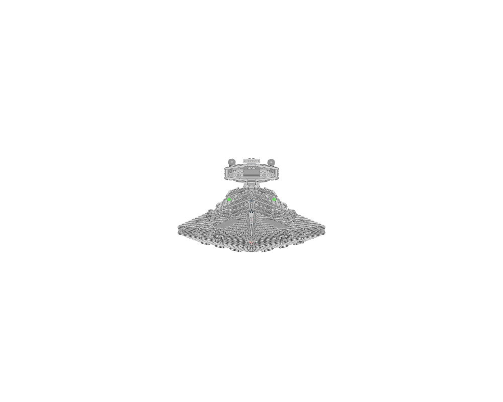
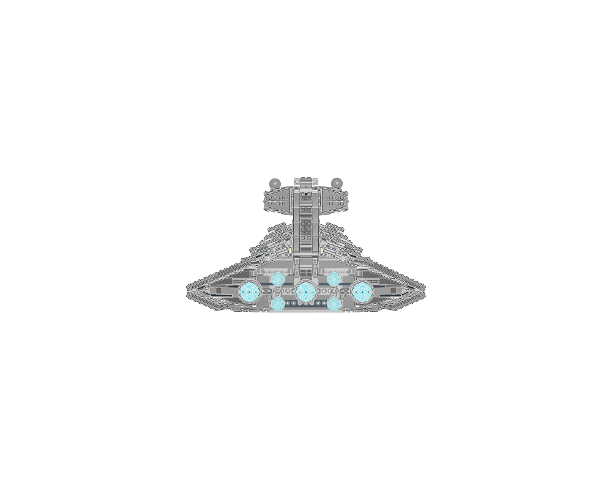
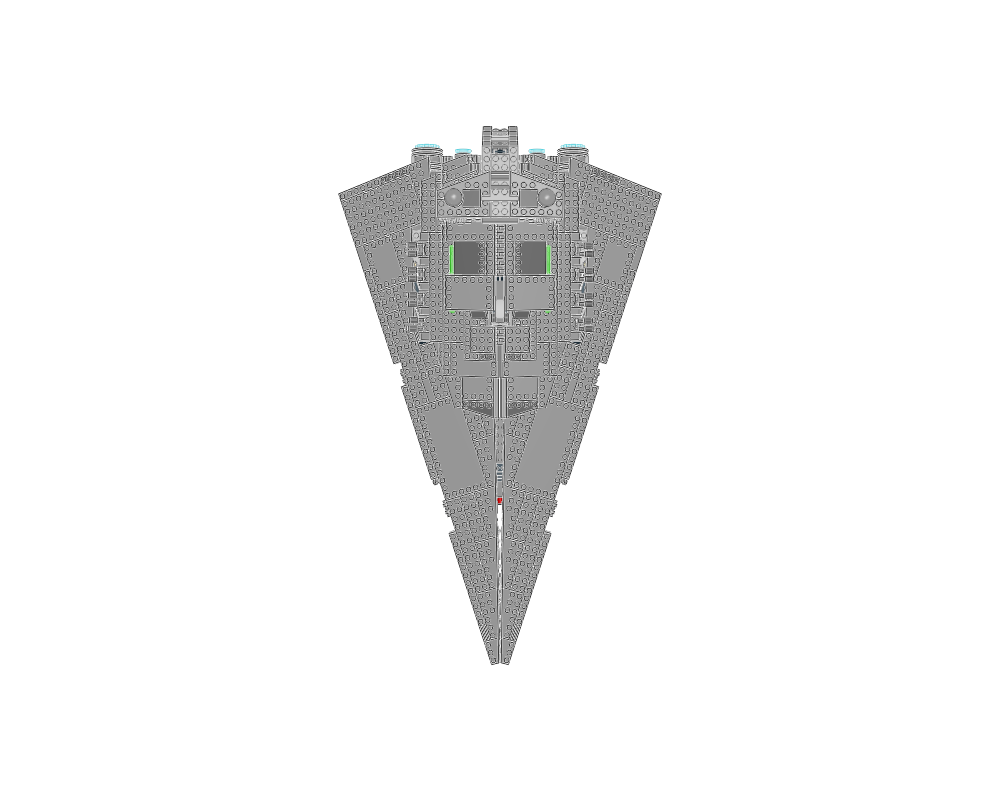

Layer a broad wedge hull, narrow edge trenches and smaller superstructure to establish capital-ship scale.
construction
Compare upper and lower panel thickness, perimeter recesses, bridge silhouette and engine cluster.
interfaces
Long hull panels require real hinge/brace interfaces and an internal frame; a visually aligned wedge does not establish an attachment.
parent context
This is the full source assembly; source transform and overlap errors remain visible.
reuse notes
Inspiration only: do not export it as a checked construction. Rebuild useful panel techniques with proper rigid placements and inspect the internal support structure.
home

front

back

top
Sections to study separately
Use manual prepare on a selected source section to create its build pages.
75055 - Main.ldr — 1 source steps
75055 - Imperial Star Destroyer.ldr — 1 source steps